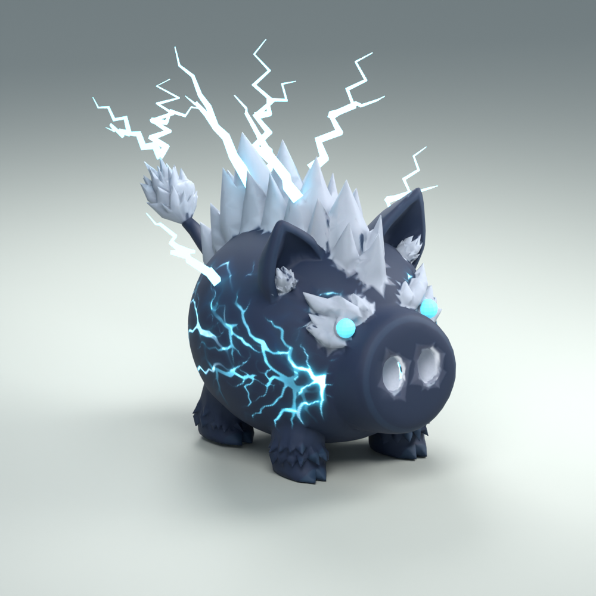
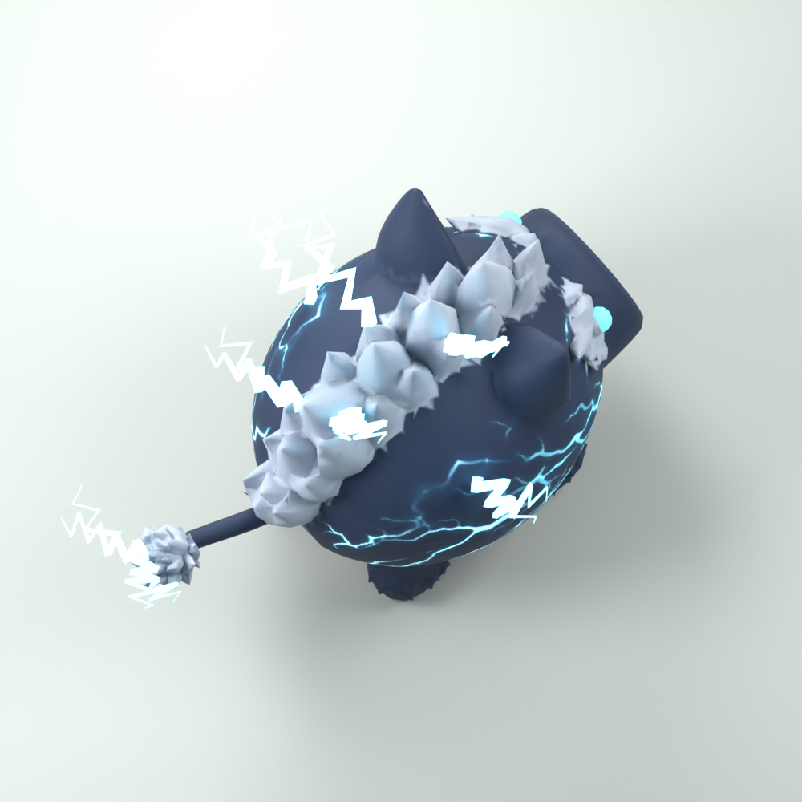
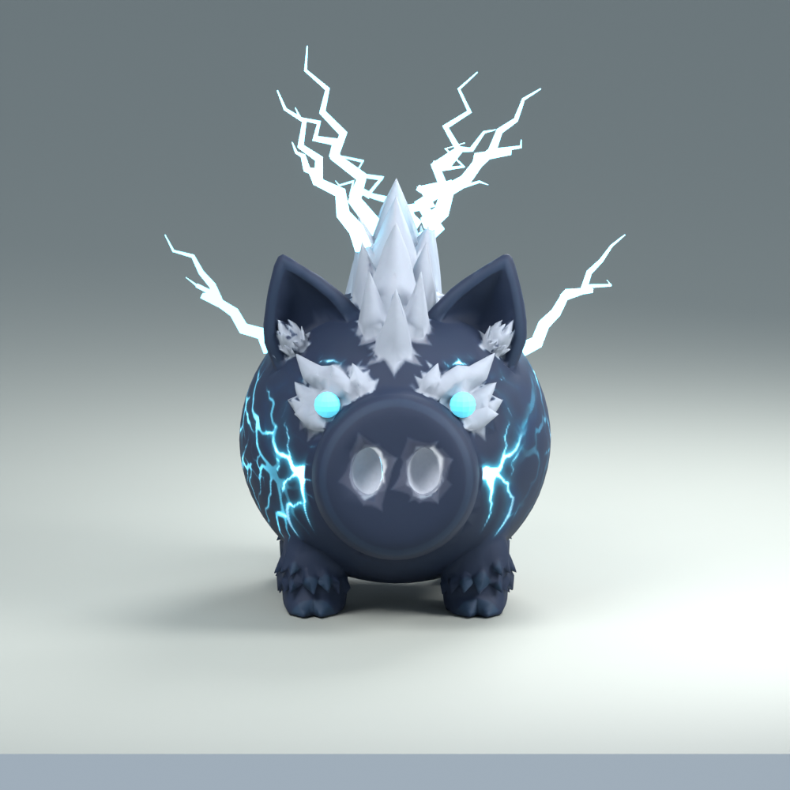
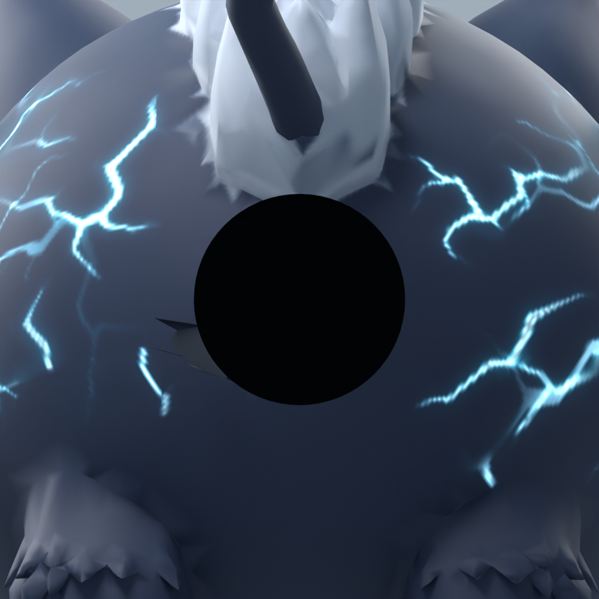

STORM WOLF · LAYOUT AND LIGHTNING REVISION
Storm Wolf
A flush opening into the hollow body, with the original tail projecting outward just above it. The mane covers the coin deposit location. Original painted coat and crystal details retained, with chunky branching lightning and synchronized body glow.
Lightning in motion
Chunky, jagged branches flash in short, uneven bursts. The lightning painted on the body glows softly between strikes and brightens in sync with the bolts.
33–67 ms flashes · staggered double strikes · animated body glow · 30 fps Blender preview
9 meshes · 23,516 triangles · Studio integration pending





